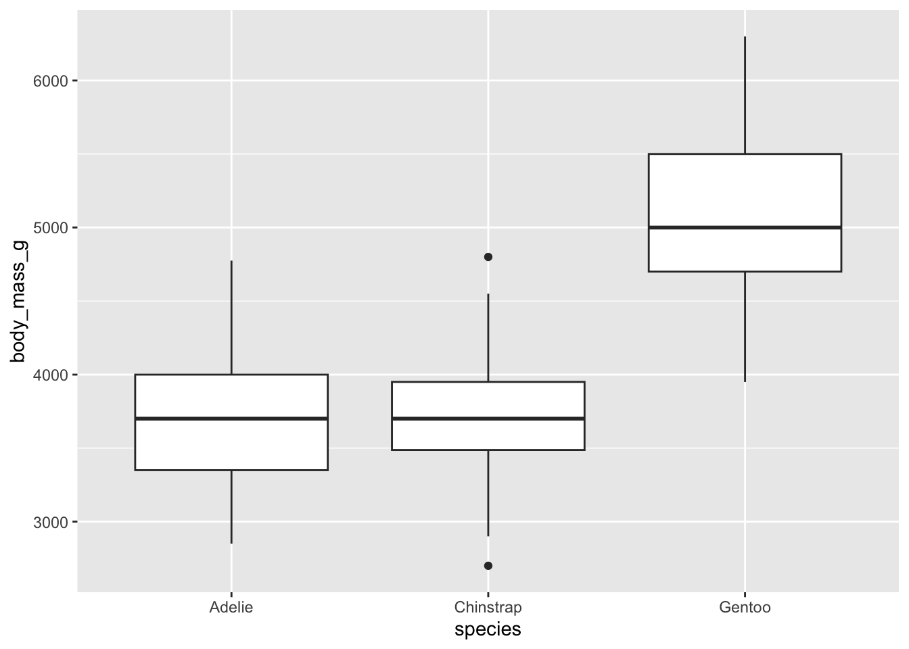
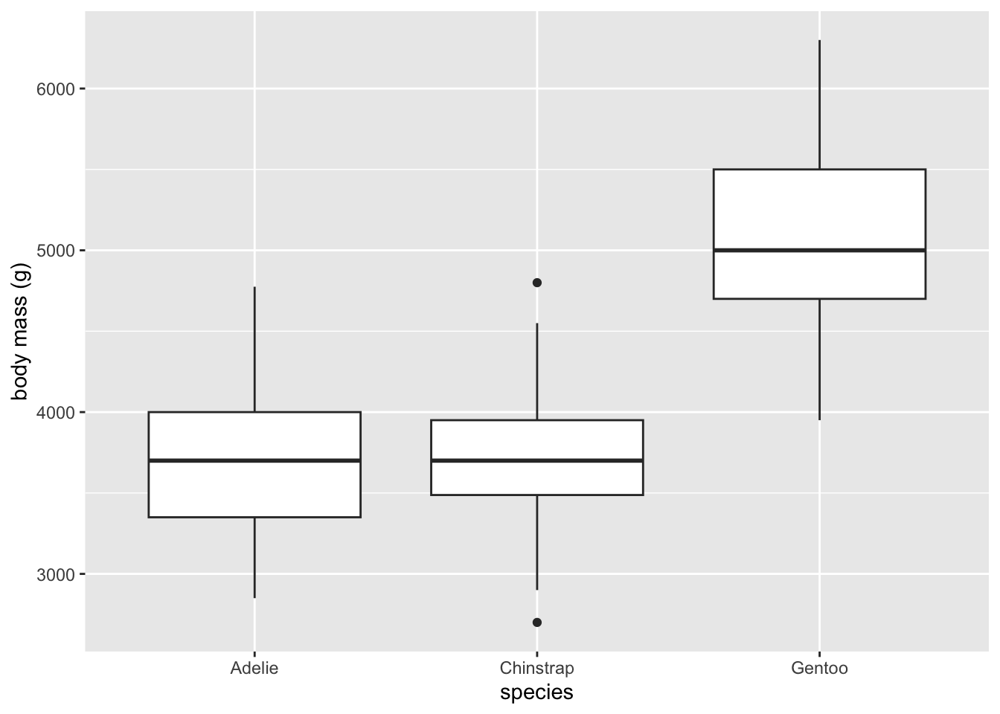
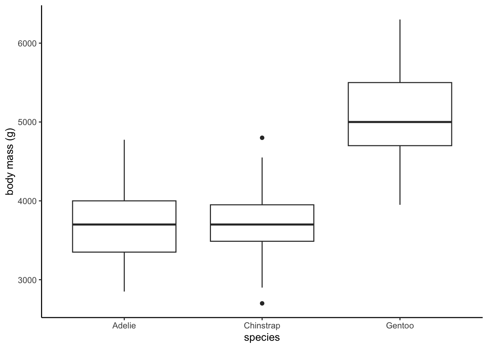
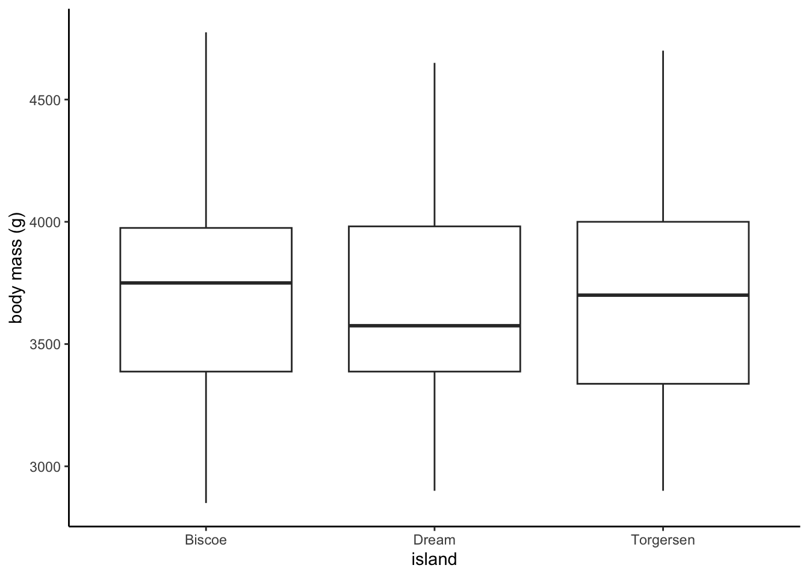
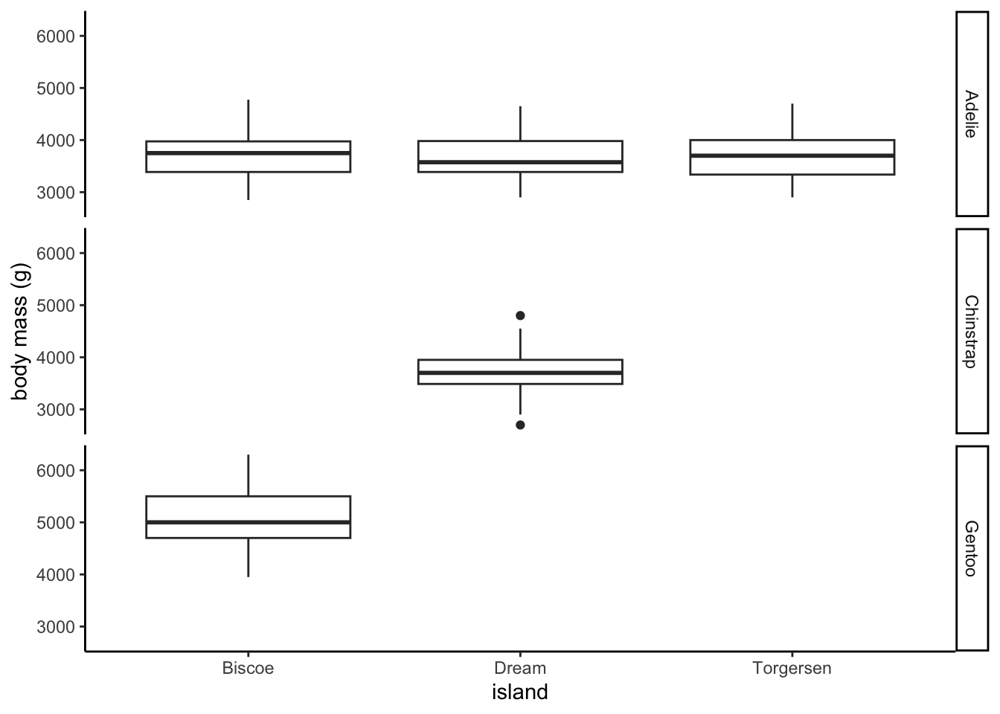
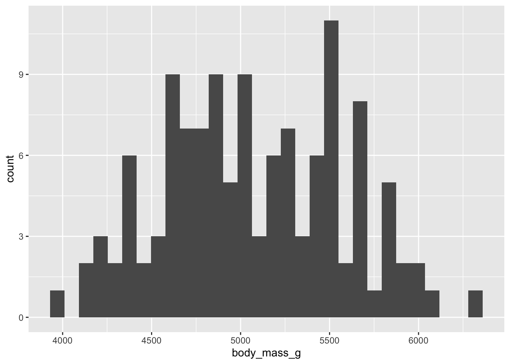
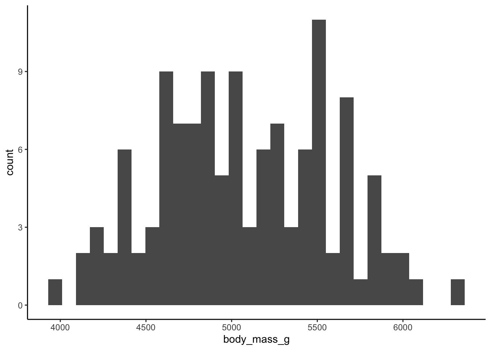
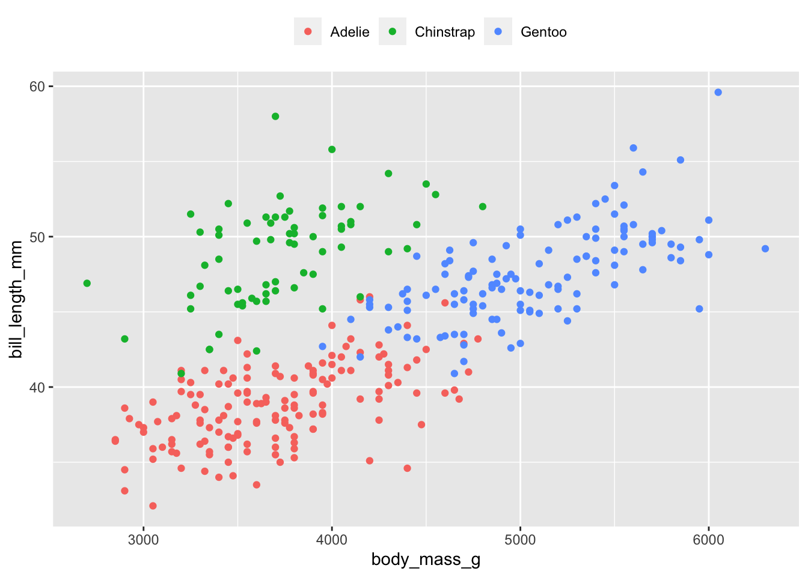

# this is a comment, I could use it to explain the code below
# I am making a numeric vector x
x <- c(1, 2, 3)5 🎉 Review 🎉 coding, data, graphics
5.1 Goals
Build more confidence with:
- Coding in R, with special attention to writing useful scripts and different types (aka classes) of objects
- Manipulating data
- Making graphics
5.2 Learning the Tools
5.2.1 Writing useful scripts
One key to writing useful scripts is making effective use of comments. Recall: comments are the text that is only for us humans to read. Comments always start with a # symbol, like this:
In the above code, the computer doesn’t bother trying to understand what you wrote in the comment, it only cares about the code x <- c(1, 2, 3).
Try doing the opposite:
this is a comment, I could use it to explain the code below
I am making a numeric vector x
# x <- c(1, 2, 3)What do you think will happen? Try running it and see.
Important We ask you to complete your lab reports by writing a script (saved in the file report.R), running the code in that script, and then pasting the answers back into the script as comments.
If a lab report question was
- Make a vector containing these numeric values and then calculate its median
1.0, 1.2, 2.3, 4.0, 5.1
Your answer should look like this:
# 2. Make a vector containing these numeric values and then calculate its median `1.0, 1.2, 2.3, 4.0, 5.1`
x <- c(1.0, 1.2, 2.3, 4.0, 5.1)
median(x)
## 2.3Your answer should not look like this:
# 2. Make a vector containing these numeric values and then calculate its median `1.0, 1.2, 2.3, 4.0, 5.1`
# x <- c(1.0, 1.2, 2.3, 4.0, 5.1)
#
# median(x)
2.3In the incorrect example, the code is commented out (incorrect because you want to run the code) and the answer is not commented out—incorrect because we explicitly ask you to report the answer as a comment…also imagine if the answer needed to be a sentence, if you reported that answer without making it a comment, R would throw an error.
5.2.2 Manipulating data
Let’s use the data on global reef fish species richness to help understand how to subset data. First read-in the data and have a look:
reef_fish <- read.csv("data/global-reef-fish.csv")
head(reef_fish) site temp_C spp_richness
1 abrolhos_1 25.91224 59
2 aceh_1 28.91176 268
3 aceh_2 28.93666 141
4 aceh_4 28.95750 135
5 aceh_5 28.96406 135
6 ailuk_atoll_1 27.91439 132The columns are site, temp, and spp_richness. If I was curious about the mean species richness for the whole dataset, how could I figure that out?
First, I could recall that to access the one column containing species richness I can use the $:
reef_fish$spp_richnessTry that out.
Then if I want to know the mean, I can just put that above command inside the function mean:
mean(reef_fish$spp_richness)[1] 121.1167Now suppose I want to know the specific values of temp and spp_richness for one specific site. Imagine I already know the name of the site I’m interested in: hawaii_11. How do I extract the rows associated with that site? I use the subset function:
subset(reef_fish, reef_fish$site == "hawaii_11") site temp_C spp_richness
157 hawaii_11 24.73345 117The function subset takes two arguments: the data.frame we want to take a subset of (in this case reef_fish) and a vector of TRUEs and FALSEs that tells R which rows we want. As we covered in lecture, a vector composed of TRUE and FALSE is a logical vector, i.e. it is of class logical.
Let’s look at how we made a logical vector with the above code reef_fish$site == "hawaii_11.
First we asked for just the site column using the $ symbol
reef_fish$siteThen we used the double equal sign == to ask R a question: “hey R, which of the values in the site column are equal to "hawaii_11"?” And R answered our question by reporting a FALSE for every value in the site column that does not equal "hawaii_11" and reporting a TRUE for every value in the site column that does equal hawaii_11. Here’s that full command:
reef_fish$site == "hawaii_11"We have to put “hawaii_11” in quotes for two reasons:
- the
sitecolumn is of class character, so to ask R a yes/no question with the==symbol, we need to use the same class - if we did not put
"hawaii_11"in quotes, R would think we were trying to refer to an object namedhawaii_11; chances are there is no object namedhawaii_11, so R would return an error
There are other types of “yes/no” questions we can ask R. For example, we can ask if a numerical value/vector is greater than or less than something. Here is how we would subset the reef_fish data.frame to look at only the rows with temperature less than or equal to 22C:
subset(reef_fish, reef_fish$temp_C <= 22) site temp_C spp_richness
183 lord_howe_island_1 21.38052 337
184 lord_howe_island_2 21.30229 119
234 norfolk_island_1 21.33907 79
235 norfolk_island_2 21.39242 46
361 santa_catarina_4 21.95693 46We used <= for “less than or equal to”. We can use just < for stricktly less than. The same goes for >= and >.
We can also combine “yes/no” questions. There are two ways to combine them: with “AND” or with “OR”. Let’s see an “AND” example, we use the symbol & for “AND”:
subset(reef_fish, reef_fish$temp_C <= 22 & reef_fish$temp_C > 21.5) site temp_C spp_richness
361 santa_catarina_4 21.95693 46We are asking R to make a subset for cases where the temperature is \(\le 22\) AND \(< 21.5\). There is only one row that meets those criteria.
R might not be able to find any cases that match our criteria, for example if we ask for temperature less than 21.5 AND site equal to "santa_catarina_4":
subset(reef_fish, reef_fish$temp_C < 21.5 &
reef_fish$site == "santa_catarina_4")[1] site temp_C spp_richness
<0 rows> (or 0-length row.names)We get 0 rows back.
Let’s contrast that with what we get replacing AND with OR. The symbol for “OR” is |:
subset(reef_fish, reef_fish$temp_C < 21.5 |
reef_fish$site == "santa_catarina_4") site temp_C spp_richness
183 lord_howe_island_1 21.38052 337
184 lord_howe_island_2 21.30229 119
234 norfolk_island_1 21.33907 79
235 norfolk_island_2 21.39242 46
361 santa_catarina_4 21.95693 46Here we get all the rows that meet either the criterion that temperature is less than 21.5 or the criterion that site is equal to "santa_catarina_4".
There is one last super useful “yes/no” question having to do with missing data. The reef_fish data do not have missing values so let’s look at the Palmer penguins data provided by the palmerpenguins package
library(palmerpenguins)
head(penguins)# A tibble: 6 × 8
species island bill_length_mm bill_depth_mm flipper_length_mm body_mass_g
<fct> <fct> <dbl> <dbl> <int> <int>
1 Adelie Torgersen 39.1 18.7 181 3750
2 Adelie Torgersen 39.5 17.4 186 3800
3 Adelie Torgersen 40.3 18 195 3250
4 Adelie Torgersen NA NA NA NA
5 Adelie Torgersen 36.7 19.3 193 3450
6 Adelie Torgersen 39.3 20.6 190 3650
# ℹ 2 more variables: sex <fct>, year <int>Already we can see some missing data in the form of NA values. If we would like to remove rows that have an NA in a certain column, we can use the function is.na to help us do that.
The function is.na looks different from the other “yes/no” questions like ==, but it serves the same purpose, it lets us ask a “yes/no” question, is this case, “are the values NA or not?”
So if we want to remove rows for which bill_length_mm is NA, we would do this:
subset(penguins, !is.na(penguins$bill_length_mm))# A tibble: 342 × 8
species island bill_length_mm bill_depth_mm flipper_length_mm body_mass_g
<fct> <fct> <dbl> <dbl> <int> <int>
1 Adelie Torgersen 39.1 18.7 181 3750
2 Adelie Torgersen 39.5 17.4 186 3800
3 Adelie Torgersen 40.3 18 195 3250
4 Adelie Torgersen 36.7 19.3 193 3450
5 Adelie Torgersen 39.3 20.6 190 3650
6 Adelie Torgersen 38.9 17.8 181 3625
7 Adelie Torgersen 39.2 19.6 195 4675
8 Adelie Torgersen 34.1 18.1 193 3475
9 Adelie Torgersen 42 20.2 190 4250
10 Adelie Torgersen 37.8 17.1 186 3300
# ℹ 332 more rows
# ℹ 2 more variables: sex <fct>, year <int>Notice the ! in that code. The ! symbol (pronounced “bang!”) changes a TRUE to a FALSE and a FALSE to a TRUE. It reverses the answer. So we asked is.na which tells us TRUE when the value is NA. But we want the opposite, we want to know which values are not NA, so we put “bang” in front: !is.na(penguins$bill_length_mm).
5.2.3 Making graphs
Let’s keep using the penguins data to make some plots. Let’s look at how the different species compare in terms of their body mass. Here our explanatory variable is penguin species, and the response variable is body mass. So we have…
5.2.3.1 Categorical explanatory variable, numerical response variable
For this type of situation we often want a boxplot:
ggplot(penguins, aes(x = species, y = body_mass_g)) +
geom_boxplot()
Cool! This is a perfectly good exploratory plot. But how could we improve it if we wanted it to be more of a finished product? The y-axis label could be nicer looking:
ggplot(penguins, aes(x = species, y = body_mass_g)) +
geom_boxplot() +
ylab("body mass (g)")
And finally, we might debate about whether we need the gridlines in the background (e.g. if they are over-plotting), let’s try adding a different theme to remove those:
ggplot(penguins, aes(x = species, y = body_mass_g)) +
geom_boxplot() +
ylab("body mass (g)") +
theme_classic()
Some will prefer the grid, others will not. Make your choice based on what you want the viewers of your graphic to understand about your data.
We might also be curious about if the different species have different sizes on the different islands. First let’s use subset to look at one species (Adelie) across the islands:
ggplot(subset(penguins, penguins$species == "Adelie"),
aes(x = island, y = body_mass_g)) +
geom_boxplot() +
ylab("body mass (g)") +
theme_classic()
Pretty similar. But what about the other species? We can look at all species at once by using facetting
ggplot(penguins, aes(x = island, y = body_mass_g)) +
geom_boxplot() +
facet_grid(rows = vars(species)) +
ylab("body mass (g)") +
theme_classic()
Ahhh interesting, Chinstrap and Gentoo are not found on all the islands like Adalie is.
Let’s try a different kind of plot, what if we want to look in more detail at how the body size data are distributed in only one species, that brings us to…
5.2.3.2 Numerical response variable, no explanatory variable
For this situation a histogram is the best graphic. Let’s look at just the Gentoo penguin (again, we use subset to achieve this)
ggplot(subset(penguins, penguins$species == "Gentoo"),
aes(x = body_mass_g)) +
geom_histogram()
Looks like a nice symetric distribution without any major outliers. Here’s a case where I would say the grid lines in the background are definitely not neccesary, and thus overplotting:
ggplot(subset(penguins, penguins$species == "Gentoo"),
aes(x = body_mass_g)) +
geom_histogram() +
theme_classic()
Now let’s look at how body mass and bill length are related, this brings us to…
5.2.3.3 Numerical reponse and numerical explanatory variable
For this situation a scatter plot is best:
ggplot(penguins, aes(x = body_mass_g, y = bill_length_mm)) +
geom_point()
The bigger the penguin, the bigger the bill. Makes sense! But do all the penguins have the same exact relationship? Let’s use different colors for the different species to find out:
ggplot(penguins, aes(x = body_mass_g, y = bill_length_mm,
color = species)) +
geom_point() 
The legend might make it hard to see the actual data! Let’s move the legend to a better place
ggplot(penguins, aes(x = body_mass_g, y = bill_length_mm,
color = species)) +
geom_point() +
theme(legend.position = "top",
legend.title = element_blank())
We also used legend.title = element_blank() to remove the title of the legend.
Now we can see that Adelie and Gentoo follow the same kind of patter, but Chinstrap penguins have comparatively longer bills for their mass. But for folks with red-green color blindness, this would not be clear. Let’s choose different colors
ggplot(penguins, aes(x = body_mass_g, y = bill_length_mm,
color = species)) +
geom_point() +
theme(legend.position = "top",
legend.title = element_blank()) +
scale_color_viridis_d()
5.3 Questions
- Fix the snippet of a script below:
First I read-in my data
# read.csv("data/BatTongues.csv")
# then I plot a histogram of tongue lengths
ggplot(bats, aes(x = tongue_length)) +
"geom_boxplot()" +
xlab(Tongue length (mm))Use the
reef_fishto do the following:- copy the line of code
reef_fish <- read.csv("data/global-reef-fish.csv")over to your report.R script - use
subsetand$to calculate the mean species richness across sites with a temperature greater than or equal to 25 C - use
subsetand$to calculate the mean species richness across sites with a temperature less than 25 C
- copy the line of code
Fix this dataset using the principles we’ve discussed in lecture and lab. Your final dataset should have columns called
site,date_visited,impact,species,length_cm. Hint: pay special attention to all the inconsistent ways missing data have been recorded.It should be noted that these are made up data (made up by Andy). They come from hypothetical examples we’ve been talking about in class including our three favorite fish species uhu, lauʻipala, and pākuʻikuʻi. And they come from a hypothetical study we have talked about looking at how the level of human impact can affect ecosystems. These data imagine the impact of humans on the body sizes of these three fish species.
Report your answer to this problem by copying the google sheet, fixing it, and pasting a URL link to the corrected google sheet in the report.R script. Make sure to report the URL as a comment, and make sure to allow sharing (via google sheets) to anyone with the link
Save the dataset you just cleaned-up as a .csv file and upload it to Posit Cloud so we can work with it for the following questions.
Remember these are made up data!
- Read in the cleaned-up data and use
subsetto make a new data.frame that has no missing species names - The column for
impactrepresents an ordinal variable, but right now R doesn’t know that; write code to change theimpactcolumn into a properly ordered ordinal variable column - Make a plot showing how the sizes of the three different species change across the levels of human impact. Hint: you will need to use colors and facets
- in a few sentences, describe what you conclude about the effect of human impact on fish body size…in these made up data
- Read in the cleaned-up data and use